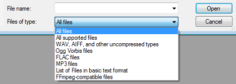
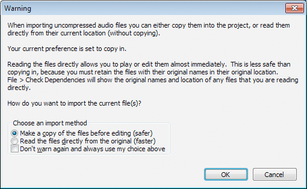

Importing Audio
From Audacity Manual
- If you have already saved your audio as an Audacity Project, use or to open the <my_project_name>.aup. Do not attempt to open, import or manipulate any individual AU files. See Audacity Projects for more information.
Contents
- Audio File Formats Supported by Audacity
- Sample Rate and Sample Format of imported files
- Four Ways to Import Audio
- Using the file type dropdown menu in the Open and Import Audio Dialogs
- Importing Uncompressed Audio Files
- Importing Compressed Audio Files
- Importing audio from CDs
Audio File Formats Supported by Audacity
The audio formats importable by Audacity as shipped are:
- Uncompressed audio formats: most WAV and AIFF files including all PCM variants.
- Compressed audio formats: Ogg Vorbis, FLAC, MP2 and MP3.
You can install the optional FFmpeg library to import a much larger range of audio formats including AC3, AMR(NB), M4A, MP4 and WMA (if the files are not DRM-protected to work only in particular software). FFmpeg will also import audio from most video files or DVDs that are not DRM-protected. On Mac OS X only, Audacity can import M4A, MP4 and MOV files without FFmpeg.
- Older uncompressed file types such as WAV with U-Law or IMA ADPCM encoding are generally supported provided they contain correctly formatted header information.
- If files do not have header information (such as RAW or VOX ADPCM) or have non-standard header information, you can normally import them using .
- WAV files from portable recorders may contain proprietary compressed audio. These should not be imported as Raw Data, but by installing the FFmpeg library.
- LOF files (lists of files) are also supported if the list is correctly formatted and contains supported files.
Sample Rate and Sample Format of imported files
Audacity always imports files at their original sample rate, as displayed in the Track Information Area of the Track Control Panel.
When importing a file into an empty project window (as always happens when using as described below), the Project Rate control in Selection Toolbar changes if necessary to reflect the rate of the file. The Project Rate determines the sample rate a file will be exported at, so no further adjustment is needed to export that file at its original rate. However, once there is already an audio track of any origin in the project (either an imported file, a recording or generated audio), importing an audio file will never change the project rate.
Generally, Audacity imports files at the sample format (bit depth) specified at Default Sample Format in Quality Preferences. This setting defaults to 32-bit float. Therefore by default an imported file will show in the Track Control Panel as 32-bit float, even if its original bit depth is lower. This is best for high-quality editing. Even if you choose a lower Default Sample Format than 32-bit float, Audacity will never downconvert a file that has a higher bit depth, as shown in the following table for WAV and AIFF imports using the standard uncompressed files importer.
Resolution of imported WAV and AIFF files using standard importer Default Sample Format File bit depth Resolution imported at 16 16 16 16 24 32 16 32 32 24 16 24 24 24 32 24 32 32 32 (default) 16 32 32 (default) 24 32 32 (default) 32 32
OGG is unusual in that it will always import at 16-bit resolution using the standard OGG Vorbis importer, irrespective of Default Sample Format. This is due to the design of the OGG codec. However OGG can be imported at 32-bit resolution using FFmpeg, as described at Using the file type dropdown menu.
Four Ways to Import Audio
No matter which method you use to bring an audio file into Audacity, the file is always imported into a saved or unsaved Audacity project. The imported file always appears in a new track in that project.
1.
If you select the command, then choose one or more audio files, Audacity will import the selected file(s) into the existing project. This is useful to bring the content of one or more audio files into a project that already contains audio (for example, to mix several audio files together).
2.
This command behaves differently according to whether the project window in which you use the Open command has ever contained tracks of any type.
- If the project contains or has ever contained tracks at some point in its history (so that and are not empty), Open imports each file you select into its own new project window. For example, selecting three files would create three new project windows, each containing one of the files and each a separate project with its own history. This is handy if you want to apply different actions to different (or even the same) files and easily compare the results of each.
- If the project is empty and has never contained any tracks (for example, you used to create a new, empty project or used to close an existing project), Open imports the first file into the empty project window, then imports each subsequent file into its own new project window.
So to save your edits to an audio file for the computer you always have to choose an Export command from the File Menu, even if you want to overwrite the exact same file that you imported.
3. (Open Recent on Mac OS X)
This command imports a single file from a list of the 12 most recently imported files or recently saved projects. The file opens in a new window exactly as .
4. Drag and drop
- On Windows and Mac OS X
- Drag and drop one or more audio files into an open Audacity project window: this is equivalent to .
- Drag and drop one or more audio files onto the Audacity icon: this is equivalent to .
- On Linux:
- Drag and drop files into an open Audacity Project window: this is equivalent to .
- Drag and drop one or more audio files onto the Audacity icon: only the first file will open. More than one file dragged and dropped onto the icon will do the same as the command for the first file, but the other files will generate an error message saying that Audacity is already running.
This menu (called "Format" on Mac OS X) contains a list of different file types.
- 
Choosing a particular file type in the menu performs two functions.
- The file type choice filters the list of files in the window by restricting it to files of that type.
- The file type choice determines which importer attempts the file first when using the Open or Import Audio dialogs. For example, a WAV file could be imported by Audacity's native WAV importer or by the optional FFmpeg library if this was installed.
Additionally, rules for the order in which different importers attempt files of particular types can be created at Extended Import Preferences with an option to over-ride the Open and Import Audio file type choice. See Import Filtering and Importer Order for more details.
Importing Uncompressed Audio Files
The two most common uncompressed file types you will encounter are WAV and AIFF.
Warning Dialog when Importing Uncompressed Audio Files
The first time you import an uncompressed audio file into Audacity, you will see this dialog.
- 
For each imported file, you can choose:
- Whether to copy the imported file's data into the project or to read its data directly from the file, as described below.
- Whether to make your copy or read directly choice permanent and never show this warning again.
Import Methods
- Make a copy before editing (safer)
- This is the default setting. When this option is chosen, Audacity copies the imported file(s) into the project's audio data. It is essential that files are copied into the project if the Audacity project is to be moved, opened on another computer or sent to someone else, or if you need to to move, rename or delete the original files.
- This option does not make a backup copy of the original file in its original location. If you don't want to lose the original content of the file when exporting to the same file name and location, please change the file name when exporting.
- Read directly from the original (faster)
- When this option is chosen Audacity always reads imported files from the folder you first imported them from, without copying them into the project. Therefore with this option set, you must not move, rename or delete imported uncompressed files, or the folder they are in. The advantage of this option is that you can begin editing a long file almost immediately, since On-Demand Loading will be used to import the file.
- If you export to the same file name and location as the original file, Audacity will make a copy of the original file's content (renamed to include "-old" and a number) and will then read the project from this "-old" file. Therefore you must not move, rename or delete any "-old" files until you have completely finished working on the project.
Dependencies
If you import any uncompressed audio files into your project using the "read directly" option, then your project depends on those files remaining available. At any time you can check which files your project depends on by clicking on . See the Dependencies Dialog page for details.
When you save a project you can choose whether or not to copy dependent files into the project. See the Projects Preferences page for details.
Importing Compressed Audio Files
When you import a compressed audio file into your project such as MP2, MP3, Ogg Vorbis or FLAC, there is usually no choice between "safer" and "faster" - the file's data is always copied into the project.
Importing audio from CDs
Audacity does not contain any function for importing (ripping) audio from CDs. This can, however, be achieved by using other programs to extract the data into a file format Audacity does support.
See the tutorial How to import CDs.